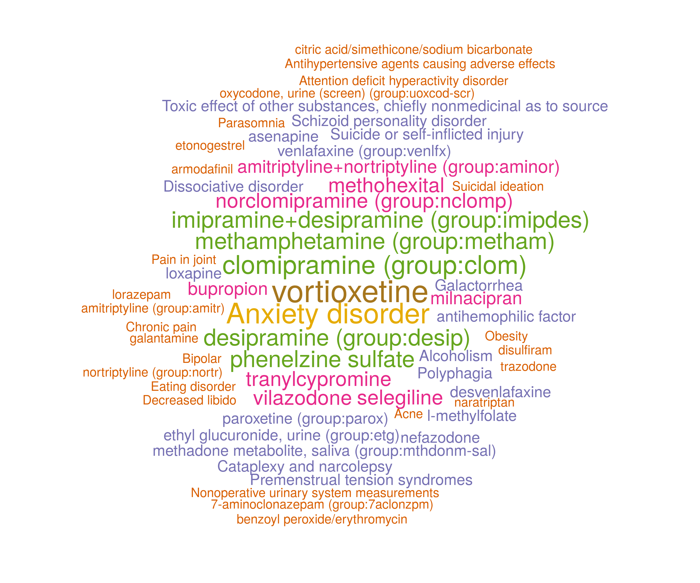
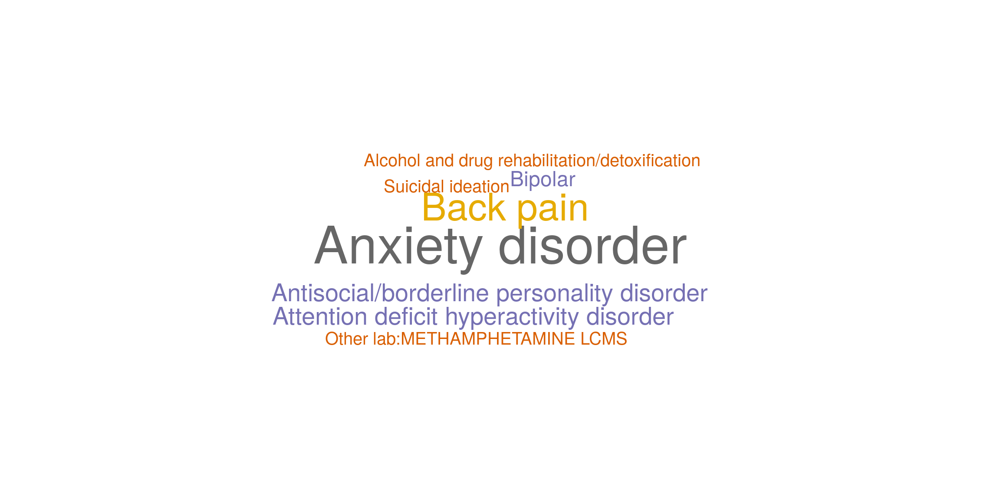

## Loading required package: RColorBrewerLoad the depression data into R.
dir <- "https://github.com/celehs/KESER/raw/master/rdata/" data <- readRDS(url(paste0(dir, "depression.rds"), "rb")) dict <- readRDS(url(paste0(dir, "dictionary.rds"), "rb"))
Feature Selection with Embeddings from Partners Healthcare
set.seed(123) system.time(loc.fit.RPDR <- loc.feature.selection( data$X_full_lst[[1]], data$Y_full_lst[[1]], data$X_train_lst[[1]], data$Y_train_lst[[1]], data$X_valid_lst[[1]], data$Y_valid_lst[[1]], alpha = 1, lambda_lst = NULL, up_rate = 10, drop_rate = 0.5, cos_cut = 0.1, add.ridge = TRUE))
## user system elapsed
## 104.518 15.264 94.271results.RPDR <- merge(loc.fit.RPDR$results, dict, all.x = TRUE) results.RPDR
## name coef description
## 1: CCS:130 0.007307169 Other diagnostic procedures, female organs
## 2: CCS:182 0.021885287 Mammography
## 3: CCS:200 0.018956719 Nonoperative urinary system measurements
## 4: CCS:218 0.124579578 Psychological and psychiatric evaluation and therapy
## 5: CCS:219 0.008452966 Alcohol and drug rehabilitation/detoxification
## ---
## 305: RXNORM:8629 0.000000000 prazosin
## 306: RXNORM:8787 0.000000000 propranolol
## 307: RXNORM:89013 0.009620296 aripiprazole
## 308: RXNORM:89905 0.000000000 multivitamins
## 309: RXNORM:9639 0.060960107 selegilinewordcloud(words = results.RPDR$description, freq = round(as.numeric(results.RPDR$coef) * 100), random.order = FALSE, colors = brewer.pal(8, "Dark2"), # scale = c(4, 0.2), rot.per = 0)
## Warning in wordcloud(words = results.RPDR$description, freq = round(as.numeric(results.RPDR$coef)
## * : Psychological and psychiatric evaluation and therapy could not be fit on page. It will not be
## plotted.## Warning in wordcloud(words = results.RPDR$description, freq = round(as.numeric(results.RPDR$coef)
## * : Salicylates causing adverse effects in therapeutic use could not be fit on page. It will not be
## plotted.
Feature Selection with Embeddings from Veteran Affairs (VA)
set.seed(123) system.time(loc.fit.VA <- loc.feature.selection( data$X_full_lst[[2]], data$Y_full_lst[[2]], data$X_train_lst[[2]], data$Y_train_lst[[2]], data$X_valid_lst[[2]], data$Y_valid_lst[[2]], alpha = 1, lambda_lst = NULL, up_rate = 10, drop_rate = 0.5, cos_cut = 0.1, add.ridge = TRUE))
## user system elapsed
## 306.278 29.707 283.194results.VA <- merge(loc.fit.VA$results, dict, all.x = TRUE) results.VA
## name coef
## 1: CCS:130 0.012795005
## 2: CCS:131 0.000000000
## 3: CCS:156 0.002758091
## 4: CCS:163 0.000000000
## 5: CCS:182 0.004621010
## ---
## 464: ShortName:HCV - RNA VL 0.000000000
## 465: ShortName:HDLC 0.000000000
## 466: ShortName:LDLC 0.000000000
## 467: ShortName:TotChol 0.000000000
## 468: ShortName:Trig 0.000000000
## description
## 1: Other diagnostic procedures, female organs
## 2: Other non-OR therapeutic procedures, female organs
## 3: Injections and aspirations of muscles, tendons, bursa, joints and soft tissue
## 4: Other non-OR therapeutic procedures on musculoskeletal system
## 5: Mammography
## ---
## 464: ShortName:HCV - RNA VL
## 465: ShortName:HDLC
## 466: ShortName:LDLC
## 467: ShortName:TotChol
## 468: ShortName:Trigwordcloud(words = results.VA$description, freq = round(as.numeric(results.VA$coef) * 100), random.order = FALSE, colors = brewer.pal(8, "Dark2"), # scale = c(4, 0.2), rot.per = 0)
## Warning in wordcloud(words = results.VA$description, freq = round(as.numeric(results.VA$coef)
## * : Psychological and psychiatric evaluation and therapy could not be fit on page. It will not be
## plotted.## Warning in wordcloud(words = results.VA$description, freq = round(as.numeric(results.VA$coef) * :
## Posttraumatic stress disorder could not be fit on page. It will not be plotted.